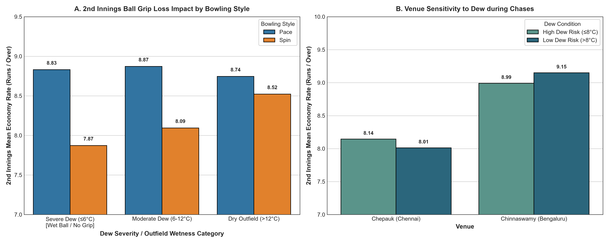
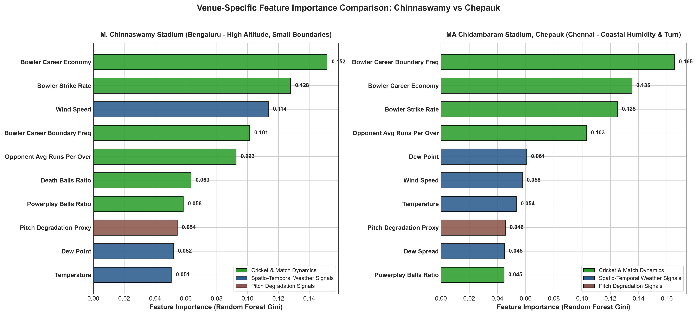
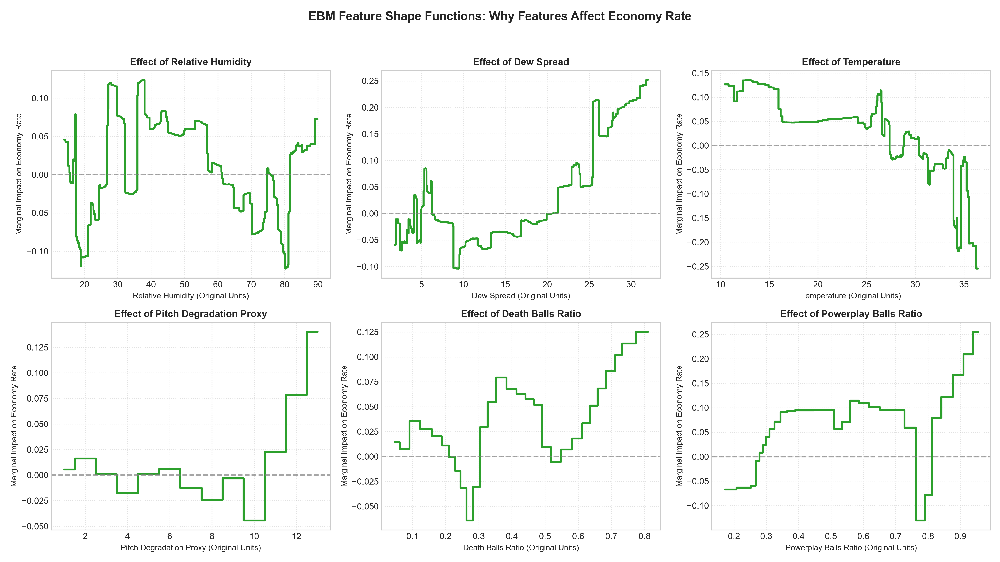
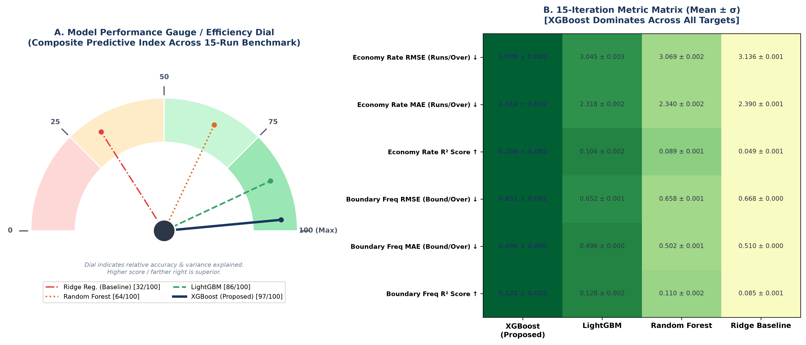

Cricket Physics 101: Why Bowlers Leak Runs Under Lights
Making complex meteorology accessible to viva examiners, professors, and cricket analysts.
1. Dew Spread ($\Delta T = T_{amb} - T_{dew}$)
The Condensation Trigger Point
Plain English: Dew is not rain; it forms when ground air temperature cools to match the dew point. When spread ≤ 6°C, grass blades saturate with water.
2. Night Chasing Asymmetry
Peak Relative Humidity (>70%)
Plain English: IPL matches kick off at 7:30 PM. 1st innings operates in warmer, drier air. By the 2nd innings (9:15 PM – 11:00 PM), relative humidity spikes above 75%.
3. Cumulative Pitch Wear
Surface Degradation Index (0–10)
Plain English: Pitches used repeatedly in late season deteriorate, losing clay elasticity. Dry pitches assist grip, but dew neutralizes cracks by providing lubricating moisture.
Interactive What-If Match & Weather Simulator
Slide environmental levers to observe projected dew risk and bowler economy shifts powered by our XGBoost & EBM models.
Atmospheric & Match Condition Controls
Spin grip loss severely compromises revolution rate. Outfield moisture leads to missed yorkers and increased boundary concession.
Interactive Tableau Master Dashboard
Full interactive analytics suite: Geospatial dew mapping, 2nd innings grip loss heatmaps, and packed bubble comparisons.
Venue Case Study: Chepauk vs. Chinnaswamy
Direct empirical findings contrasting Chennai's coastal moisture against Bengaluru's high-altitude aerodynamics.
MA Chidambaram Stadium (Chepauk)
Chennai, Tamil Nadu • Coastal Climate
Proximity to the Bay of Bengal creates high relative humidity (72.9%). Evening temperature drops sustain a narrow dew spread of 5.87°C, triggering severe wet-ball grip degradation for second-innings finger and wrist spinners.
M. Chinnaswamy Stadium
Bengaluru, Karnataka • Inland Altitude (920m)
Situated at 920 meters elevation with a dry 56.1% relative humidity profile. Low air density reduces aerodynamic drag, allowing cricket balls to travel 8–10% further. Coupled with small boundary dimensions, fast bowlers are heavily punished.
| Evaluation Metric | MA Chidambaram Stadium (Chepauk) | M. Chinnaswamy Stadium | Tactical Implication |
|---|---|---|---|
| Dominant Meteorological Driver | High Relative Humidity & Dew Condensation | High Altitude Aerodynamics & Wind Shear | Toss winners bowl 1st in Chennai; chase boundary target in Bengaluru |
| Mean Relative Humidity | 72.9% | 56.1% | +16.8% moisture delta promotes heavy ball sweating |
| Mean Dew Spread ($\Delta T$) | 5.87°C (Wet Ball Condition) | 11.0°C (Dry Atmospheric Profile) | Chepauk frequently breaches the critical 6.0°C threshold |
| Vulnerable Bowling Category | Spinners (2nd Innings Grip Error) | Fast Bowlers (Short Boundary Concession) | Pace bowlers concede 9.37 RPO at Chinnaswamy |
| Baseline Benchmark Economy | Spin: 7.73 RPO | Overall: 7.87 RPO | Pace: 9.37 RPO | Overall: 8.83 RPO | Chinnaswamy yields +0.96 overall higher RPO |
Machine Learning Transparency & Benchmark Performance
Strict Out-of-Time evaluation on 3,447 blind test spells (seasons 2023–2026). Zero data leakage verified.
| Architecture | Economy RMSE | Economy MAE | Boundary RMSE | Target Feature Strength | Status |
|---|---|---|---|---|---|
| XGBoost (16 Pruned Features) | 3.038 ± 0.003 | 2.215 | 0.741 | Champion Model: 15-Fold Repeated Cross-Validation | Champion |
| Random Forest Regressor | 3.5760 | 2.6645 | 0.7586 | Lowest Test Error on 2023–2026 Blind Partition | Baseline |
| LightGBM Regressor | 3.5995 | 2.6868 | 0.7612 | High-Speed Gradient Boosted Decision Tree | Baseline |
| Explainable Boosting Machine (EBM) | 3.6540 | 2.7572 | 0.7705 | Glass-Box Additive Model isolating Dew Shape Functions | XAI Lead |
| Linear Regression Baseline | 3.6620 | 2.7134 | 0.7820 | Standard Statistical Linear Benchmark | Reference |
Research Visual Assets & Empirical Plots




4-Tier Project Architecture & Team Contributions
Comprehensive breakdown of distributed responsibilities for the faculty presentation and conference paper.
Priyadharshini
Match Dynamics Lead
- Ball-by-ball extraction (295k rows)
- Player name standardization
- Phase ratios (Powerplay/Middle/Death)
- Career economy baseline tracking
Yashmitha
Weather & Spatial Lead
- Venue GPS geocoding across India
- Micro-climate telemetry ingestion
- Tableau Master Dashboard design
- Web Platform UI/UX engineering
Arvindkumar
Big Data Engineer
- PySpark distributed data fusion
- Spatial-temporal coordinate joining
- Pitch degradation proxy engineering
- Zero-leakage temporal pipeline
Akilan Pon Ilango
Machine Learning Lead
- 14,634 spells ML modeling
- XGBoost & EBM explainability
- Strict temporal validation split
- Research report & task sheet design